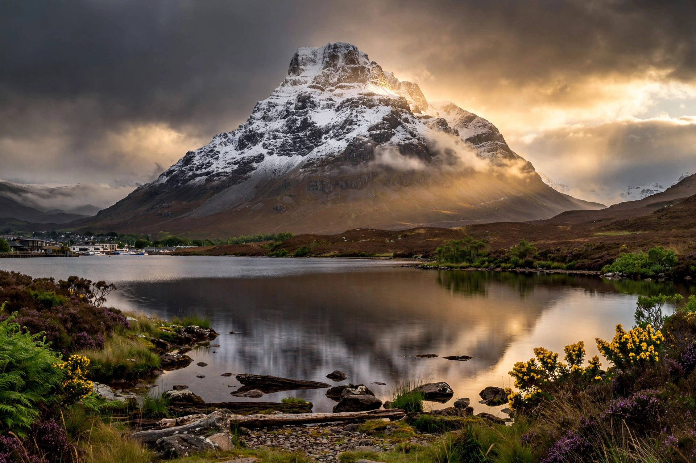

| Munro | |
|---|---|
| Elevation threshold | 3,000 ft (914.4 m) |
| Number in Scotland | 282 |
| Highest | Ben Nevis, 1,345 m |
| First listed | 1891, by Sir Hugh Munro |
| Maintained by | Scottish Mountaineering Club |
A Munro ( listen) is a mountain in Scotland with a height over 3,000 feet (914.4 m). The best known Munro is the highest mountain in the British Isles, Ben Nevis. The list of Munros is maintained by the Scottish Mountaineering Club (SMC), which also maintains lists of subsidiary tops and of the lower Corbetts, Grahams and Donalds.

The list was originally compiled by Sir Hugh Munro, 4th Baronet (1856–1919), and published in the Scottish Mountaineering Club Journal in 1891 as "Munro's Tables." Munro listed 283 peaks he believed to exceed 3,000 feet, distinguishing subsidiary "tops" from separate mountains. The tables have been revised many times as surveying improved; the number of Munros currently stands at 282, with 226 further subsidiary Munro Tops.
Climbing all the Munros — "Munro bagging" — is a popular challenge. The first completer was the Reverend A. E. Robertson, who finished in 1901. Those who complete the round are called "compleatists" or Munroists; the SMC maintains the official list, which ran to several thousand names by the 2020s. Notable records include fastest rounds, winter rounds and continuous self-propelled rounds, such as Donnie Campbell's 31-day, 23-hour round in 2020, which broke the record set by Stephen Pyke in 2010.
Mountains between 2,500 and 3,000 feet with a prominence of at least 500 feet are Corbetts (222), named after John Rooke Corbett. Grahams are between 2,000 and 2,500 feet with at least 150 metres of prominence (219 after a 2022 resurvey reduced the height threshold to 600 metres, giving 231). Together with the English and Welsh Hewitts and the Irish lists, these classifications structure British hill lists.
Ben Nevis · Scottish Mountaineering Club · Hill lists in the British Isles